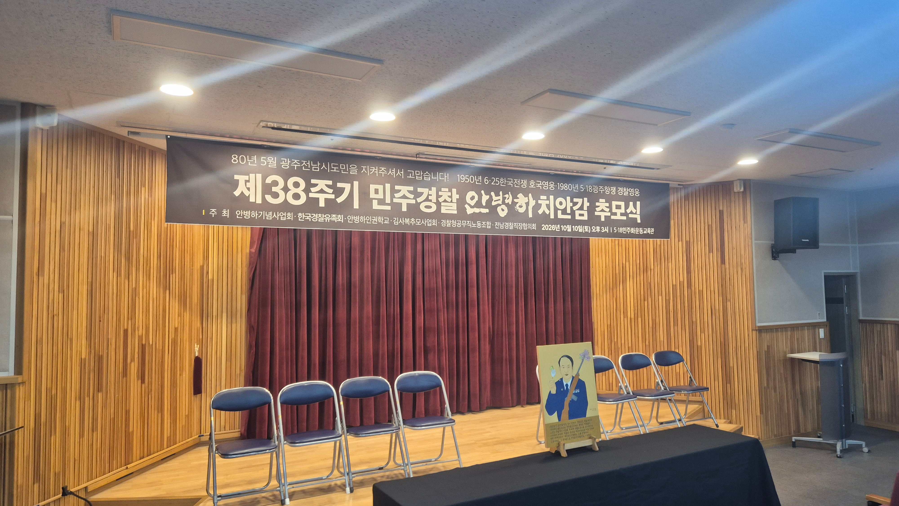
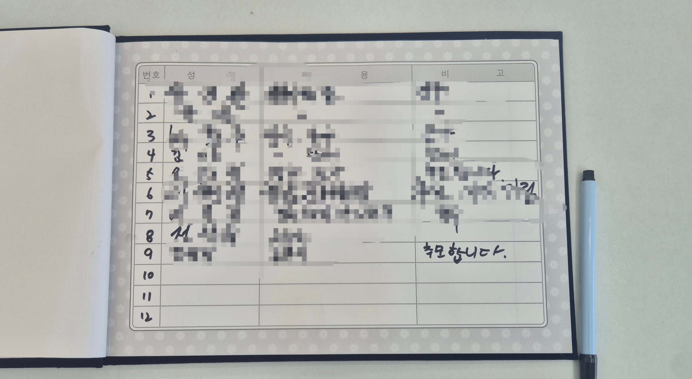
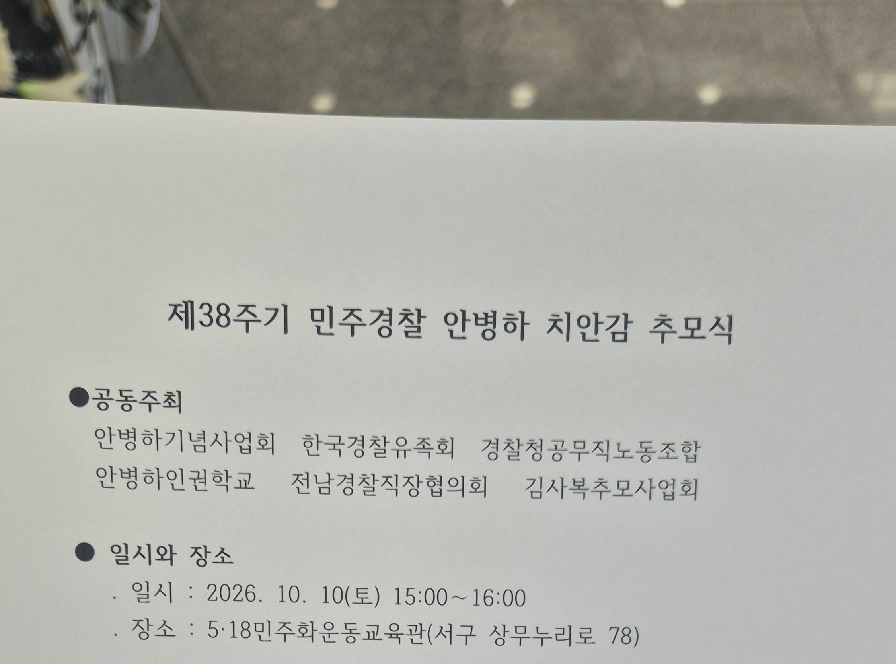
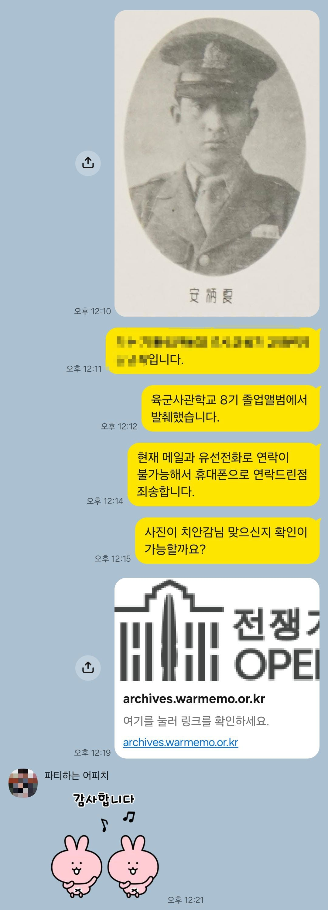

이전 글: https://www.dogdrip.net/728054299



아직 추모식 시작 전이라 조금 어수선한 분위기입니다....
경찰 관계자분들도 많이 오셨습니다...
+

작성자는 안병하기념사업회에 안병하 치안감님의 육사 졸업사진을 제보했으며...

이에 추모식에 초대받았습니다...
이전 글: https://www.dogdrip.net/728054299



아직 추모식 시작 전이라 조금 어수선한 분위기입니다....
경찰 관계자분들도 많이 오셨습니다...
+

작성자는 안병하기념사업회에 안병하 치안감님의 육사 졸업사진을 제보했으며...
이에 추모식에 초대받았습니다...
감사합니다... 제가 워낙 악필이라....

감사합니다...!
잘 다녀오슈
추모식 하는 중입니다...
내몫까지 경건히 하고와 ㅋ
감사합니다....
올릴거면 뭐했던 사람인지 정도는 적어줄법 한데
이전 글에 적혀있습니다....
누군데?
광주 민주화운동 당시 전남경찰국장으로 온건진압에 노력하고 발포명령도 거부한 분이십니다...
이게 뭐라고 왜 붐업이 이렇게 많나...
옳그떠는 아닌데 비슷하게 될 수 있어서
그렇긴 하네요..
공감합니다...
훌륭하다 개붕쓰~! 정치적이념 성향 떠나서 사람 살리려고 노력한 사람은 존경하는게 마땅함..
감사합니다....
군부독재시절이라 절대 쉽지 않은 결정이었을 텐데 대단하신 분이네
다녀오느라 고생많았습니다
감사합니다...!
동렬이 글씨 연습 좀 해야겠구나
고생했다